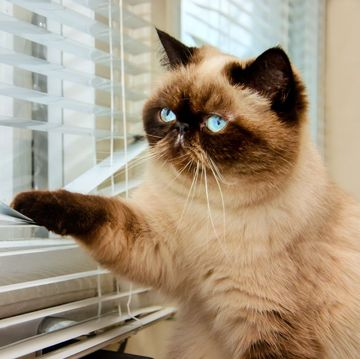

Je kat vindt je toch wel hartstikke lief
We denken vaak dat katten niets van hun baasje moeten hebben, maar niets is minder waar. Ze voelen zich juist prettiger met jou in de buurt.
De kat heeft het imago een kil, afstandelijk huisdier te zijn dat niets moet hebben van haar of zijn baasje. Volgens wetenschappers van de Oregon State University (VS) blijkt dat juist helemaal niet het geval. Katten zijn volgens hen minder gestrest als hun baasje in de buurt is.
Katten kwaad
De onderzoekers namen het gedrag van 42 volwassen katten onder de loep. De beestjes werden geobserveerd in een onbekende omgeving. In sommige gevallen was hun baasje erbij en in sommige gevallen was er een voorwerp in de kamer dat rook naar het baasje. Tot slot werden de katten ook bekeken als ze helemaal in hun uppie werden achtergelaten. Conclusie: de katten kwamen veel minder gestrest over als hun baasje in de buurt was. Deze moest daadwerkelijk in levende lijve acte de présence geven voor een kalmere kat, want slechts een voorwerp met de geur van het baasje bleek niet te helpen.
Mis poes
Dit noemen de onderzoekers het secure base effect. Mensen en dieren voelen zich volgens dit fenomeen minder onveilig in een onbekende omgeving als er een bekende veilige haven aanwezig is. Zoals kleine kinderen zich ook vaak prettiger voelen met een ouder in de buurt. Bij katten kan het baasje dus juist zorgen voor minder stress. 83 procent van de katten waarvan het baasje een poosje weg was, was zelfs hartstikke blij deze weer te zien. Zij wreven hun kop tegen dat van hun baasje zodra deze er weer was.
Hard to cat
Katten hebben dus wel degelijk affectie voor hun menselijke huisgenoten slash dienstknechten. Het komt er alleen meestal pas uit als je een poosje weg bent, dus dat helpt vast niet bij het rechttrekken van hun afstandelijke imago.